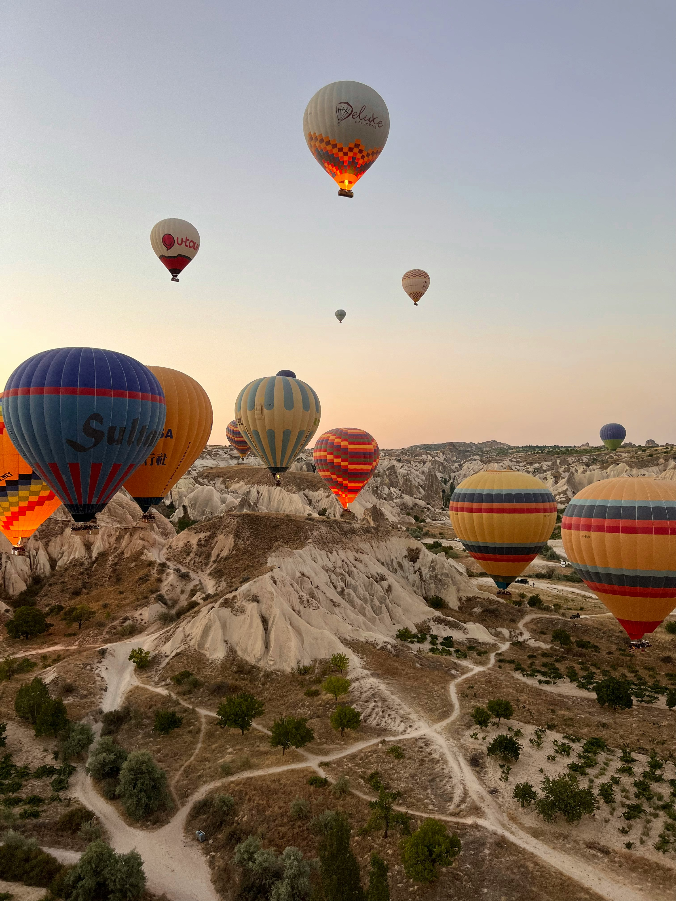

Kapadokya, Türkiye’nin en büyüleyici ve eşsiz doğal güzelliklerinden birine ev sahipliği yapıyor. Merkezi Anadolu’da yer alan bu bölge, tarihi, kültürel ve doğal unsurlarıyla adeta bir açık hava müzesi gibi. Kapadokya'nın kendine özgü coğrafyası, etkileyici peri bacaları, yer altı şehirleri ve geleneksel taş evleri ile tanışmak, unutulmaz bir deneyim vaat ediyor.
Kapadokya'nın en dikkat çekici özelliklerinden biri, dünyaca ünlü peri bacalarıdır. Bu doğal oluşumlar, binlerce yıl süren volkanik patlamalar ve erozyon sonucu oluşmuş. Fantastik şekilleriyle peri bacaları, adeta bir masal diyarını andırıyor. Göreme Açık Hava Müzesi, bu olağanüstü yapıları en iyi şekilde gözlemleyebileceğiniz yerlerden biridir. Burada, peri bacalarının arasında yer alan kayalara oyulmuş kiliseleri ve manastırları da gezebilirsiniz.
Kapadokya, yer altı şehirleri ile de ünlüdür. Derinkuyu ve Kaymaklı gibi yer altı şehirleri, tarihi boyunca bölgenin çeşitli dönemlerinde güvenli bir sığınak olarak kullanılmıştır. Bu şehirler, karmaşık tüneller, odalar ve depolarla doludur. Yer altı şehirlerini gezmek, Kapadokya'nın tarihine dair derin bir bilgi edinmenizi sağlar ve bölgenin zengin kültürel mirasını daha yakından tanıma fırsatı verir.
Kapadokya'nın kültürel zenginlikleri de gezinizin önemli bir parçası olmalıdır. Bölgenin geleneksel taş evleri, bölgesel yemekleri ve el sanatları, Kapadokya'nın otantik atmosferini deneyimlemeniz için mükemmel fırsatlar sunar. Ayrıca, yerel pazarlarda ve dükkanlarda geleneksel seramikler ve el yapımı hediyelikler bulabilir, bölgenin kendine özgü tatlarını keşfedebilirsiniz.
Kapadokya'da konaklama seçenekleri oldukça çeşitlidir. Lüks otellerden butik otellere, mağara otellerinden pansiyonlara kadar geniş bir yelpazede konaklama imkanları bulunur. Mağara otelleri, Kapadokya'nın benzersiz yapısına uygun olarak tasarlanmış ve size tarihi bir atmosferde konforlu bir konaklama deneyimi sunar.
